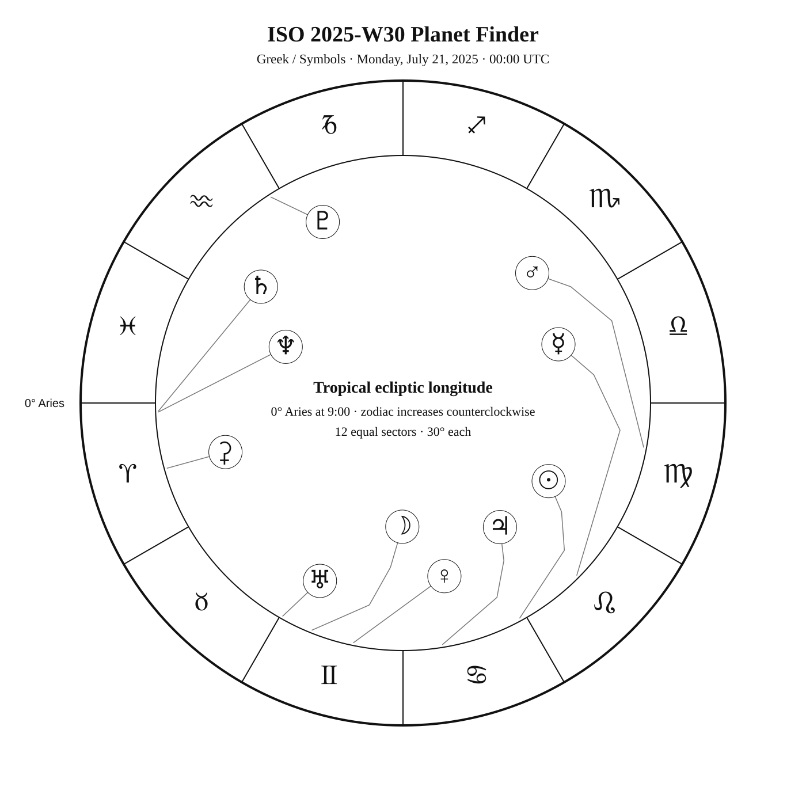
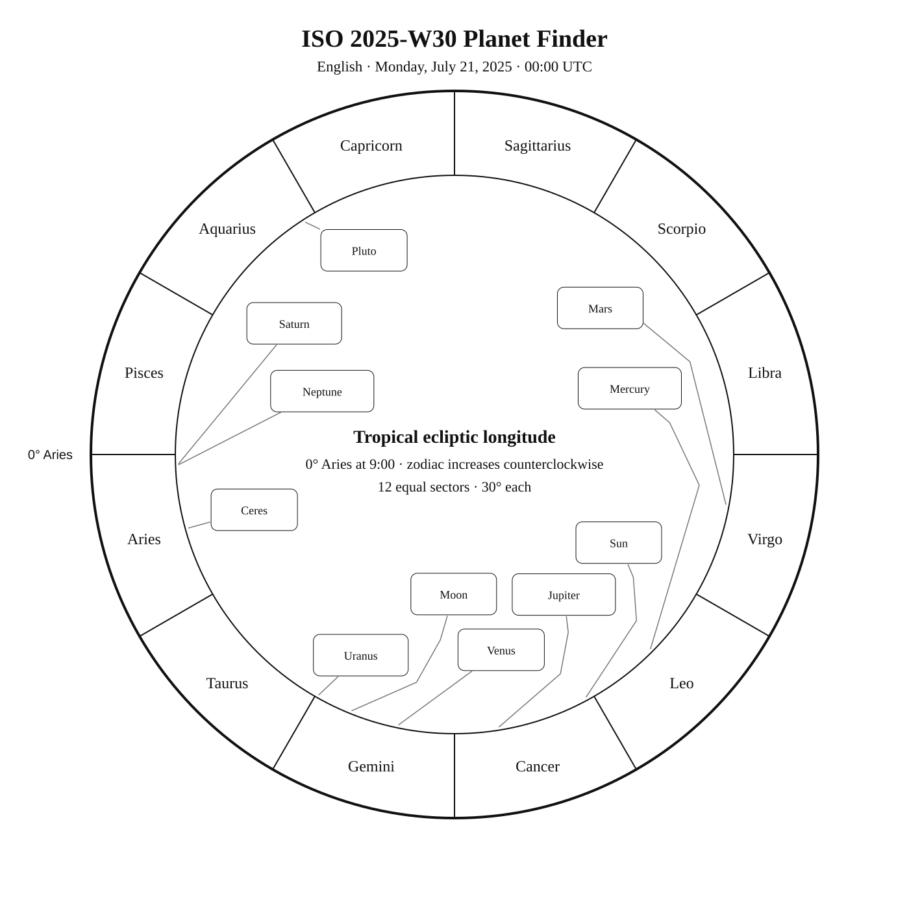
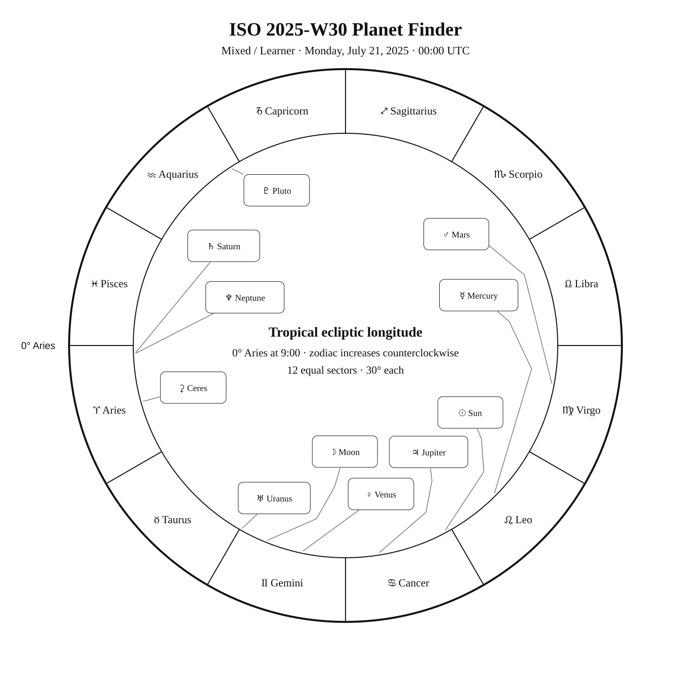

ISO 2025-W30
Week begins: Monday, July 21, 2025
Calendar
| Date | Zodiac day | Events |
|---|---|---|
| Mon, Jul 21, 2025 | ♋ 31 | M62 —  7 6.5 — Southern Summer 7 6.5 — Southern SummerM19 — 7 6.8 — Southern Summer |
| Tue, Jul 22, 2025 | ♌ 1 | ♌ Sun enters Leo — 13:29:27 UTC |
| Wed, Jul 23, 2025 | ♌ 2 | Sabik (η Oph) —  2 2.4 — Tropical Summer 2 2.4 — Tropical Summer |
| Thu, Jul 24, 2025 | ♌ 3 | 🌑 New Moon — 19:11:12 UTC C69 / NGC 6302 · Bug Nebula — 13 12.8 — Southern SummerRasalgethi (α1 Her) — 3 3.4 — Tropical Summerα2 Her —  5 5.3 — Tropical Summer 5 5.3 — Tropical Summer |
| Fri, Jul 25, 2025 | ♌ 4 | M92 — 6 6.4 — Northern SummerM9 — 8 7.7 — Tropical Summer |
| Sat, Jul 26, 2025 | ♌ 5 | |
| Sun, Jul 27, 2025 | ♌ 6 | β Ara — 3 2.8 — Southern SummerC81 / NGC 6352 — 8 8.1 — Southern Summer |
Weekly Solar-System Ephemeris
Snapshot: Week begins July 21, 2025, 00:00 UTC.
(-90° to +90°; defaults +45°, 21:00 LAT)
| Body | ☉︎ | ☽︎ | ☿︎ | ♀︎ | ♂︎ | ♃︎ | ♄︎ |
|---|---|---|---|---|---|---|---|
| Ecliptic | ♋︎ 28°30′ β +0°00′ | ♊︎ 8°11′ β +5°01′ | ♌︎ 15°15′ β −3°49′ | ♊︎ 18°20′ β −2°02′ | ♍︎ 19°36′ β +0°45′ | ♋︎ 9°19′ β −0°06′ | ♈︎ 1°53′ β −2°20′ |
| Observing |  | -8.3 | ☉︎ | -4.0 | 1.6 | ☉︎ | 0.9 |
| Rise | 04:27 | 00:15 | 06:08 | 01:34 | 08:57 | 02:53 | 22:11 |
| Set | 19:33 | 16:24 | 19:59 | 16:41 | 21:44 | 18:22 | 10:05 |
Extended targets:
| Body | ⚳︎ | ♅︎ | ♆︎ | ♇︎ |
|---|---|---|---|---|
| Ecliptic | ♈︎ 15°27′ β −12°11′ | ♊︎ 0°33′ β −0°13′ | ♈︎ 2°06′ β −1°20′ | ♒︎ 2°41′ β −3°45′ |
| Observing | 8.8 | 5.8 | 7.7 | 14.4 |
| Rise | 23:31 | 00:22 | 22:06 | 19:59 |
| Set | 10:55 | 15:20 | 10:09 | 04:43 |
β = ecliptic latitude (+ north, − south).
Rise and set are Local Apparent Time for the selected latitude.
Naked-eye observing uses the Sun’s altitude at the selected Monday observer time: Daylight (Sun ≥ −0.833°), Civil twilight (−0.833° to −6°), Nautical twilight (−6° to −12°), Astronomical twilight (−12° to −18°), and Night (below −18°).
Solar Glare identifies a body too close to the Sun when the sky-state rule does not already supersede its naked-eye classification.
The Sun’s observing status uses this same five-state sky classification.
Planet Finder



Sky Notes
Kilroy: Sky Notes · generated 2026-10-23 12:53:22 UTC
ISO 2025-W30 runs from July 21 through July 27. Saturn and Neptune are separated by about 0.2° in geocentric ecliptic longitude at the Monday 00:00 UTC snapshot. Venus is about 4.2° in ecliptic longitude from Elnath in Taurus.


Naked eye: 🌑 New Moon — 19:11:12 UTC. The dark Moon favors faint targets and extended star fields. Use Sabik, Rasalgethi, β Ara as the week’s fixed-sky framework.

Planets: Moon: Naked eye; magnitude -8.3; direct motion; 18.3% illuminated. Below the horizon at 21:00 local apparent solar time, 45°N. Monday 00:00 UTC snapshot. Solar conjunction in ecliptic longitude Jul 24 19:11 UTC. Conjunction with Mercury in ecliptic longitude Jul 25 14:58 UTC. Conjunction with Venus in ecliptic longitude Jul 21 18:23 UTC. Conjunction with Jupiter in ecliptic longitude Jul 23 04:56 UTC. Mercury: In solar glare; magnitude 2.1; retrograde motion; 12.0% illuminated. Monday 00:00 UTC snapshot. Conjunction with Moon in ecliptic longitude Jul 25 14:58 UTC. Venus: Naked eye; magnitude -4.0; direct motion; 71.4% illuminated. Below the horizon at 21:00 local apparent solar time, 45°N. Monday 00:00 UTC snapshot. Conjunction with Moon in ecliptic longitude Jul 21 18:23 UTC. Mars: Naked eye; magnitude 1.6; direct motion; 93.7% illuminated. Monday 00:00 UTC snapshot. Ceres: Telescope; magnitude 8.8; direct motion; 97.1% illuminated. Below the horizon at 21:00 local apparent solar time, 45°N. Monday 00:00 UTC snapshot. Jupiter: In solar glare; magnitude -1.9; direct motion; 99.9% illuminated. Monday 00:00 UTC snapshot. Conjunction with Moon in ecliptic longitude Jul 23 04:56 UTC. Saturn: Naked eye; magnitude 0.9; retrograde motion; 99.8% illuminated. Below the horizon at 21:00 local apparent solar time, 45°N. Monday 00:00 UTC snapshot. Uranus: Binoculars; magnitude 5.8; direct motion; 100.0% illuminated. Below the horizon at 21:00 local apparent solar time, 45°N. Monday 00:00 UTC snapshot. Neptune: Telescope; magnitude 7.7; retrograde motion; 100.0% illuminated. Below the horizon at 21:00 local apparent solar time, 45°N. Monday 00:00 UTC snapshot. Pluto: Substantial telescope; magnitude 14.4; retrograde motion; 100.0% illuminated. Monday 00:00 UTC snapshot. Opposition in ecliptic longitude Jul 25 06:32 UTC.


Binoculars: Trace Hercules’s charted figure in the finder, then identify Alpha2 Her at its charted position.
Small telescope: M62: consult its dedicated finder and observing story for equipment guidance; M19: consult its dedicated finder and observing story for equipment guidance; Bug Nebula: consult its dedicated finder and observing story for equipment guidance; M92: consult its dedicated finder and observing story for equipment guidance; M9: consult its dedicated finder and observing story for equipment guidance; NGC 6352: consult its dedicated finder and observing story for equipment guidance
Substantial telescope: No fixed-sky Calendar object is classified as requiring a substantial telescope this week.
Other objects listed this week: None
Mercury
Mercury: in solar glare at the Monday 00:00 UTC snapshot. Rises 06:08; sets 19:59 (45°N, local apparent solar time). Visual magnitude 2.1. The disk is 12.0% illuminated (crescent). It is 17.2° from the Sun, on its east side. Motion is retrograde at 0.227° per day in ecliptic longitude at the snapshot. Position reference: Acubens, 1.8° away. Conjunction with Moon in ecliptic longitude Jul 25 14:58 UTC. Mercury: 1.8° from Acubens in the Pathfinder.
Venus
Venus: naked eye at the Monday 00:00 UTC snapshot. At 45°N and 21:00 local apparent solar time, it is 24.1° below the horizon. Rises 01:34; sets 16:41 (45°N, local apparent solar time). Visual magnitude -4.0. The disk is 71.4% illuminated (gibbous). It is 40.2° from the Sun, on its west side. Motion is direct at 1.139° per day in ecliptic longitude at the snapshot. Position reference: Elnath, 8.7° away. Conjunction with Moon in ecliptic longitude Jul 21 18:23 UTC. Venus: 8.7° from Elnath in the Pathfinder.
Moon
Moon: naked eye at the Monday 00:00 UTC snapshot. At 45°N and 21:00 local apparent solar time, it is 17.9° below the horizon. Rises 00:15; sets 16:24 (45°N, local apparent solar time). Visual magnitude -8.3. The disk is 18.3% illuminated (waning crescent). It is 50.5° from the Sun, on its west side. Motion is direct at 14.400° per day in ecliptic longitude at the snapshot. Position reference: Aldebaran, 10.7° away. Solar conjunction in ecliptic longitude Jul 24 19:11 UTC. Conjunction with Mercury in ecliptic longitude Jul 25 14:58 UTC. Conjunction with Venus in ecliptic longitude Jul 21 18:23 UTC. Conjunction with Jupiter in ecliptic longitude Jul 23 04:56 UTC. Moon: 10.7° from Aldebaran in the Pathfinder.
Mars
Mars: naked eye at the Monday 00:00 UTC snapshot. At 45°N and 21:00 local apparent solar time, it is 7.1° above the horizon. Rises 08:57; sets 21:44 (45°N, local apparent solar time). Visual magnitude 1.6. The disk is 93.7% illuminated (gibbous). It is 51.1° from the Sun, on its east side. Motion is direct at 0.603° per day in ecliptic longitude at the snapshot. Position reference: Zavijava, 7.9° away. Mars: 7.9° from Zavijava in the Pathfinder.
Jupiter
Jupiter: in solar glare at the Monday 00:00 UTC snapshot. Rises 02:53; sets 18:22 (45°N, local apparent solar time). Visual magnitude -1.9. The disk is 99.9% illuminated (nearly full). It is 19.2° from the Sun, on its west side. Motion is direct at 0.221° per day in ecliptic longitude at the snapshot. Position reference: Alhena, 6.6° away. Conjunction with Moon in ecliptic longitude Jul 23 04:56 UTC. Jupiter: 6.6° from Alhena in the Pathfinder.
Saturn
Saturn: naked eye at the Monday 00:00 UTC snapshot. At 45°N and 21:00 local apparent solar time, it is 13.1° below the horizon. Rises 22:11; sets 10:05 (45°N, local apparent solar time). Visual magnitude 0.9. The disk is 99.8% illuminated (nearly full). It is 116.6° from the Sun, on its west side. Motion is retrograde at 0.013° per day in ecliptic longitude at the snapshot. Position reference: Fumalsamakah, 17.2° away. Neptune is 1.0° away at the snapshot. Saturn: 17.2° from Fumalsamakah in the Pathfinder.
Uranus
Uranus: binoculars at the Monday 00:00 UTC snapshot. At 45°N and 21:00 local apparent solar time, it is 23.2° below the horizon. Rises 00:22; sets 15:20 (45°N, local apparent solar time). Visual magnitude 5.8. The disk is 100.0% illuminated (nearly full). It is 58.0° from the Sun, on its west side. Motion is direct at 0.037° per day in ecliptic longitude at the snapshot. Position reference: Aldebaran, 10.9° away. Uranus: 10.9° from Aldebaran in the Pathfinder.
Neptune
Neptune: telescope at the Monday 00:00 UTC snapshot. At 45°N and 21:00 local apparent solar time, it is 12.2° below the horizon. Rises 22:06; sets 10:09 (45°N, local apparent solar time). Visual magnitude 7.7. The disk is 100.0% illuminated (nearly full). It is 116.4° from the Sun, on its west side. Motion is retrograde at 0.009° per day in ecliptic longitude at the snapshot. Position reference: Fumalsamakah, 16.7° away. Saturn is 1.0° away at the snapshot. Neptune: 16.7° from Fumalsamakah in the Pathfinder.
Ceres
Ceres: telescope at the Monday 00:00 UTC snapshot. At 45°N and 21:00 local apparent solar time, it is 26.9° below the horizon. Rises 23:31; sets 10:55 (45°N, local apparent solar time). Visual magnitude 8.8. The disk is 97.1% illuminated (gibbous). It is 102.8° from the Sun, on its west side. Motion is direct at 0.119° per day in ecliptic longitude at the snapshot. Position reference: Alrescha, 14.4° away. Ceres: 14.4° from Alrescha in the Pathfinder.
Pluto
Pluto: substantial telescope at the Monday 00:00 UTC snapshot. At 45°N and 21:00 local apparent solar time, it is 7.8° above the horizon. Rises 19:59; sets 04:43 (45°N, local apparent solar time). Visual magnitude 14.4. The disk is 100.0% illuminated (nearly full). It is 174.4° from the Sun, on its west side. Motion is retrograde at 0.023° per day in ecliptic longitude at the snapshot. Position reference: Dabih, 8.5° away. Opposition in ecliptic longitude Jul 25 06:32 UTC. Pluto: 8.5° from Dabih in the Pathfinder.
Highlights
Mercury
In solar glare; magnitude 2.1; retrograde motion; 12.0% illuminated. Monday 00:00 UTC snapshot. Conjunction with Moon in ecliptic longitude Jul 25 14:58 UTC. Mercury: 1.8° from Acubens in the Pathfinder.
Venus
Naked eye; magnitude -4.0; direct motion; 71.4% illuminated. Below the horizon at 21:00 local apparent solar time, 45°N. Monday 00:00 UTC snapshot. Conjunction with Moon in ecliptic longitude Jul 21 18:23 UTC. Venus: 8.7° from Elnath in the Pathfinder.
Moon
Naked eye; magnitude -8.3; direct motion; 18.3% illuminated. Below the horizon at 21:00 local apparent solar time, 45°N. Monday 00:00 UTC snapshot. Solar conjunction in ecliptic longitude Jul 24 19:11 UTC. Conjunction with Mercury in ecliptic longitude Jul 25 14:58 UTC. Conjunction with Venus in ecliptic longitude Jul 21 18:23 UTC. Conjunction with Jupiter in ecliptic longitude Jul 23 04:56 UTC. Moon: 10.7° from Aldebaran in the Pathfinder.
Mars
Naked eye; magnitude 1.6; direct motion; 93.7% illuminated. Monday 00:00 UTC snapshot. Mars: 7.9° from Zavijava in the Pathfinder.
Jupiter
In solar glare; magnitude -1.9; direct motion; 99.9% illuminated. Monday 00:00 UTC snapshot. Conjunction with Moon in ecliptic longitude Jul 23 04:56 UTC. Jupiter: 6.6° from Alhena in the Pathfinder.
Saturn
Naked eye; magnitude 0.9; retrograde motion; 99.8% illuminated. Below the horizon at 21:00 local apparent solar time, 45°N. Monday 00:00 UTC snapshot. Saturn: 17.2° from Fumalsamakah in the Pathfinder.
Uranus
Binoculars; magnitude 5.8; direct motion; 100.0% illuminated. Below the horizon at 21:00 local apparent solar time, 45°N. Monday 00:00 UTC snapshot. Uranus: 10.9° from Aldebaran in the Pathfinder.
Neptune
Telescope; magnitude 7.7; retrograde motion; 100.0% illuminated. Below the horizon at 21:00 local apparent solar time, 45°N. Monday 00:00 UTC snapshot. Neptune: 16.7° from Fumalsamakah in the Pathfinder.
Ceres
Telescope; magnitude 8.8; direct motion; 97.1% illuminated. Below the horizon at 21:00 local apparent solar time, 45°N. Monday 00:00 UTC snapshot. Ceres: 14.4° from Alrescha in the Pathfinder.
Pluto
Substantial telescope; magnitude 14.4; retrograde motion; 100.0% illuminated. Monday 00:00 UTC snapshot. Opposition in ecliptic longitude Jul 25 06:32 UTC. Pluto: 8.5° from Dabih in the Pathfinder.